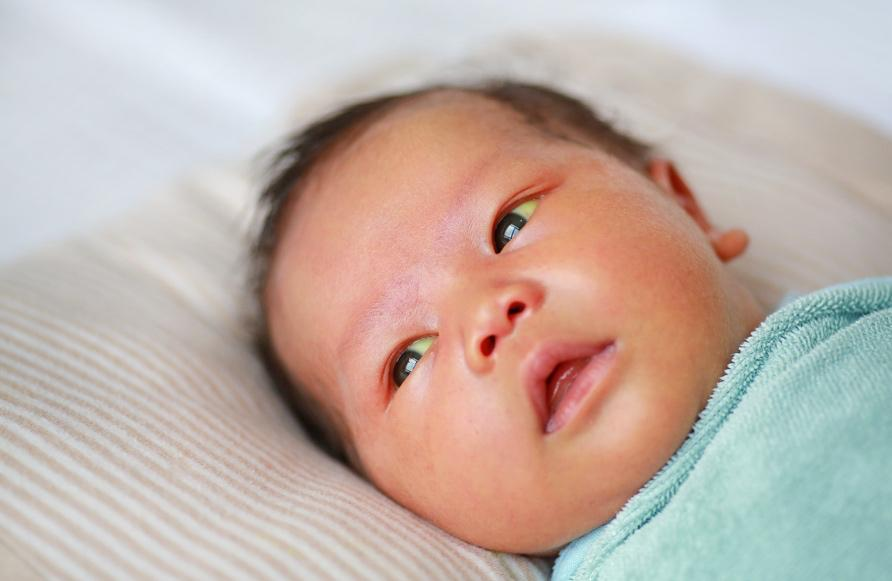

Newborn jaundice is a yellow color that can show on a baby’s skin and the white part of the eyes. It happens when a substance called bilirubin builds up in the blood.
The body makes bilirubin when it breaks down old red blood cells. Usually, the body gets rid of bilirubin through the liver and stool. When there is too much bilirubin, the skin and eyes turn yellow. This does not mean there is a serious problem, but it needs to be watched.
Jaundice is also called hyperbilirubinemia, meaning too much bilirubin.

Jaundice in newborns is very common. It often happens because a baby’s liver is still learning to do its job. It can also happen because:
The baby was born before their due date.
The baby has a lot of red blood cells that break down quickly.
The baby has a family history of jaundice.
The baby is not getting enough breast milk or formula. Dehydration can slow down how the body gets rid of bilirubin.
The baby has a blood type mismatch with their mother.
The baby has an inherited condition that causes red blood cells to break down, such as G6PD deficiency.
The baby had bruising and mild injuries during delivery. This could be after a difficult birth, use of forceps, or vacuum assistance.
The baby has poor liver function. This may be caused by an infection or an underlying problem with the liver or biliary system.
The baby has a genetic condition in which they lack an enzyme to process bilirubin.
The baby has a blocked bile duct, where bilirubin is excreted out of the liver, which can lead to bilirubin buildup.
The baby has what is called breast milk jaundice. This is thought to be due to how a baby’s immature liver and intestines process breast milk, which results in a slower removal of bilirubin from the body. It is not caused by a problem with the breast milk itself. Jaundice is not a reason to stop breastfeeding as long as a baby is feeding well, gaining weight, and otherwise growing.
It is important to look for signs that your baby might have jaundice. Keep an eye on your baby’s skin and eyes, especially during the first few days after birth. Here are the main symptoms to watch for:
Yellowing of the skin: A yellow tint may start on the face and spread down the body.
Yellowing of the white part of the eyes: The white part of the eyes may look yellow instead of white.
Darker or orange-colored stool: Your baby’s stool may look darker or more orange than usual.
Light-colored or pale urine: Your baby’s urine might be very light in color or almost clear.
Lethargy: Your baby may seem very sleepy, tired, or less active than normal.
Poor feeding: Your baby may have trouble feeding or may not want to eat as much as usual.
Skin that feels warm or looks more yellow than yesterday: Rapid changes can be a sign that jaundice is getting worse.
Seizures: In severe cases, seizures can happen.
If you notice any of these signs, especially if the yellow color is spreading or your baby is very sleepy or not interested in feeding, contact your care team right away. Early treatment can help prevent any serious problems.
Your care team checks your baby’s skin and eyes for yellow color. They may use a special light device called a jaundice meter to measure bilirubin levels in the blood.
Blood tests can also check the amount and kind of bilirubin in the blood, measure red blood cell levels, and check liver function.
Most cases get better on their own as the baby begins to eat well and the liver works more. Some babies need extra help:
Phototherapy: This is a special type of light that helps break down bilirubin in the skin. It is safe and commonly used. Your care team may place your baby on top of a special lighted blanket, under special lights, or both. To expose as much skin as possible to the light, babies are usually naked except for a diaper and eye shields and placed in an open bassinet or warmer. The eye patches or mask protect the baby’s eyes from the glare of the light.
Feeding: Giving the baby more breast milk or formula helps flush out bilirubin faster.
Monitoring: Your care team will closely watch the bilirubin levels and the baby’s signs.
Exchange transfusion: Very rarely, if the bilirubin level is rising dangerously, the baby’s blood will be removed and replaced with transfused blood to lower the amount of bilirubin in the blood quicker.
If jaundice is very high and left untreated, it can cause serious problems like deafness, cerebral palsy, or brain damage. It is rare, but it is very important to watch for signs of worsening jaundice.
There is no way to prevent jaundice in newborns. You can help prevent it from getting serious by getting treatment. You should also:
Make sure your baby eats often, at least every 2 to 3 hours.
Watch for the yellow color in the skin or eyes.
Follow all instructions from your care team about feeding and care.
Keep all follow-up appointments.
It is always OK to ask your care team questions about your newborn’s jaundice. You might ask:
What should I watch for at home?
How can I tell if jaundice gets worse?
What is the safest way to feed my baby?
When should I bring my baby back for checkups?
Remember, if you are worried about your baby’s condition, it is best to check with your care team. Call your care team if you see any of these signs:
Your baby’s skin or eyes become more yellow, or the yellow color spreads quickly, especially if it spreads beyond the face and chest.
Your baby seems very sleepy, tired, or less active than usual.
Your baby is not feeding well or is refusing to eat.
Your baby’s stool is very dark or orange, and their urine is very light or clear.
You notice your baby is fussy, irritable, or has trouble waking up.
You have concerns or questions about feeding or how to care for your baby’s skin.
Quick help can save your baby’s life. Get help right away if your baby shows any of these emergency signs:
Your baby’s skin or eyes turn very yellow very quickly, or they look very yellow all over.
Your baby is very sleepy or difficult to wake up and does not respond when you try to wake them.
Your baby is having trouble breathing, is very weak, or is not moving normally.
Your baby’s lips or tongue look blue or gray, which can be a sign of serious trouble.
Your baby is very irritable, is crying nonstop, or seems very sick.
Your baby has a fever over 100.4°F or 38°C.
Thank you for trusting us with your child’s care. We are here to support you and want you and your child to feel your best. Contact us with any questions.
IF YOU HAVE A MEDICAL EMERGENCY, CALL 911 OR GO TO THE EMERGENCY ROOM.
The information presented is intended for general information and educational purposes. It is not intended to replace the advice of your health care provider. Contact your health care provider if you believe you have a health problem.
Last updated May 2025
© 2025 Mytonomy, Inc. All rights reserved.